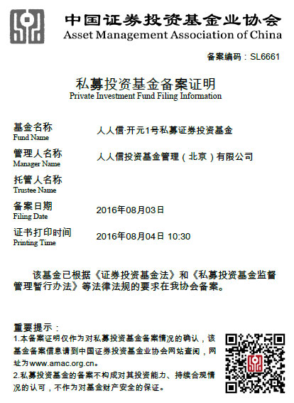

2016年2月1日，中国证券投资基金业协会（以下简称“基金业协会”）发布关于《私募投资基金管理人内部控制指引》的通知，该指引自发布之日起施行。
2016年2月4日，基金业协会发布关于《私募投资基金信息披露管理办法》的通知，该办法自发布之日起施行。
2016年4月15日，基金业协会发布关于《私募投资基金募集行为管理办法》的通知，并经协会理事会表决通过，自2016年7月15日起施行。
2016年4月18日，基金业协会发布关于《私募投资基金合同指引》的通知，并经协会理事会表决通过，自2016年7月15日起施行。
公司加强了包含公司CEO、众部门高管、项目执行团队及外部律师等在内的沟通交流。针对项目执行过程中所遇到的任何问题及时沟通反馈，第一时间拿出办法予以解决。
一方面，在外部律师与公司内部法务的指导下，团队不断规范人人信内部控制制度，包括信息披露制度、风险控制制度、合格投资者风险揭示制度、合格投资者内部审查制度、私募基金宣传推介及募集等制度。提高了部门之间的协作能力，加强了团队对新规的理解与执行。
另一方面，团队不断接洽协会官网上所公布的37家具有私募基金托管与外包业务资格的银行和券商来争取出具外包协议。通过对本次备案基金产品的选择，包括但不限于产品规模、类型、期限、投向、过往业绩及预期收益率、风险控制措施、还款来源、安全稳健度、申购费、赎回费、管理费、托管费、外包费以及券商审核的进度等各项因素逐一进行多维度比较，团队选择了上市公司且同时在37家名单中的第一创业证券股份有限公司作为本次基金产品的托管方。以投向二级市场，极其稳健型的债券类与现金管理类等最为标准和安全的金融产品作为本次备案产品。
在2016年8月3日，在多次与券商合规部双方审核无误下，公司确认通过了基金业协会的备案并获得了私募投资基金备案证明书。
